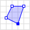

Code
(my_numeric_vec <- c(1, 2, 3))[1] 1 2 3Code
(my_character_vec <- c("a", "b", "c"))[1] "a" "b" "c"Code
(my_logical_vec <- c(TRUE, FALSE, TRUE))[1] TRUE FALSE TRUEThere are a few points in HW1 which may be tricky if you haven’t used R before, so this guide is here to provide you with some sample code that you can hopefully adapt for use in Questions 2 and 3!
sfg (sf Geometry) ObjectsHere, the trickiest part is probably figuring out exactly what format the sf library wants you to use when creating these geometry objects: the sf representations of POINT, LINESTRING, and POLYGON.
So, each subsection here will provide you with code explaining how to construct each of these three types of sfg objects out of three basic R data structures: vector, matrix, and list.
POINT objects with sf_point()The syntax for creating POINT objects is the simplest of the three: since a POINT object in the WKT schema is literally just two numbers, we just need a way to “bundle together” two numbers and then provide this “bundle” to the sf library.
So, as was discussed in class and in the Coding Workshop, we can use the c() function from Base R to bundle together any number of objects (as long as they’re all of the same type) into a vector:
(my_numeric_vec <- c(1, 2, 3))[1] 1 2 3(my_character_vec <- c("a", "b", "c"))[1] "a" "b" "c"(my_logical_vec <- c(TRUE, FALSE, TRUE))[1] TRUE FALSE TRUEWith this knowledge, along with the fact that the sf library documentation says that the st_point() function takes in a vector as input, let’s create a POINT object in R!
Since we also linked the Wikipedia page on WKT geometry representations above, let’s use the examples from that page. Their example for a POINT looks like:
POINT |
POINT (30 10) |
And, the way we would create this POINT object in R (in a way that we could thus plot it or apply our unary/binary operations to it) looks as follows:
# Load the sf library functions into R's memory
library(sf)Linking to GEOS 3.11.0, GDAL 3.5.3, PROJ 9.1.0; sf_use_s2() is TRUE# Create a numeric vector containing the two coordinates
my_point_coords <- c(30, 10)
# Print out the contents of this numeric vector
print(my_point_coords)[1] 30 10# Print out the *class* (the datatype) of this vector, how it is stored in R
class(my_point_coords)[1] "numeric"# Use the numeric vector as the *argument* to st_point(), to tell sf we want a POINT with these coordinates
my_point <- st_point(my_point_coords)
# Print out the *class* of this object, to see how sf has created an sfg (sf geometry) object
class(my_point)[1] "XY" "POINT" "sfg" We could also use plot() to plot an ultra-basic visual representation of this POINT we just created, my_point. It won’t be very interesting, however, since the plot() function for sfg objects is meant to just quickly provide an as-simple-as-possible visual representation:
plot(my_point)If we want to visualize the point in its context (in this case, in the context of the “standard” Cartesian \(xy\)-plane), we can turn to ggplot2, the Tidyverse data-visualization library, which will allow us to show the point within the broader \(xy\)-plane:
library(tidyverse) |> suppressPackageStartupMessages()
my_point |> ggplot() +
geom_sf() +
theme_classic()
Much better! We can now see, using the information along the \(x\) and \(y\) axes, that this sfg object my_point specifically represents a POINT object with \(x\) coordinate of 30 and a \(y\) coordinate of 10!
LINESTRING Objects with st_linestring()Next up is LINESTRING, which sf allows us to create using the constructor function st_linestring(). The example in the Wikipedia article in this case looks like:
LINESTRING |
 |
LINESTRING (30 10, 10 30, 40 40) |
And from the WKT string on the right side, we can see how representing this type of geometry is going to require a slightly more complex data structure than the more simple vector we used above to represent the two coordinates of a single POINT.
In this case, looking at the sf documentation, we can see that the st_linestring() constructor function requires a matrix, a datatype we haven’t seen yet but which actually builds straightforwardly on top of the vector type that we have seen!
The matrix datatype in R is, I think, easiest to understand by looking at an example. Let’s say we want to represent the matrix
\[ \begin{bmatrix} 1 & 2 & 3 \\ 4 & 5 & 6 \end{bmatrix} \]
within R. Above we saw how, to represent a vector like \((1, 2)\), we used the c() function in R: c(1, 2). To represent a matrix, it turns out that we will still use this c() function! The syntax of matrix takes a vector as input, then transforms it into matrix form as follows:
c() to write out all elements of the matrix, row by row, as a single “flat” vectorSo, to represent the example matrix \(A\) given above, in R, we implement these two steps as follows:
# First we use c() to construct a *vector* containing all
# elements of the matrix in a single row (a "flattened" representation)
flattened_matrix <- c(1, 2, 3, 4, 5, 6)
flattened_matrix[1] 1 2 3 4 5 6# Then we provide this "flattened" vector to the matrix()
# constructor function, along with instructions for R on how
# to split it into rows and columns
example_matrix <- matrix(
flattened_matrix,
byrow = TRUE,
nrow=2, ncol=3
)
example_matrix [,1] [,2] [,3]
[1,] 1 2 3
[2,] 4 5 6And there’s our example matrix from above, now encoded as an object of type matrix in R!
So, returning to our example from the Wikipedia article, since this LINESTRING consists of 3 coordinates connected by straight lines, we now need to construct a matrix with 3 rows, where each row contains the coordinates of one point in the LINESTRING. We can do this as follows, using the same syntax as in the previous code cell:
my_linestring_matrix_flat <- c(30, 10, 10, 30, 40, 40)
my_linestring_matrix <- matrix(
my_linestring_matrix_flat,
byrow = TRUE,
nrow=3, ncol=2
)
my_linestring_matrix [,1] [,2]
[1,] 30 10
[2,] 10 30
[3,] 40 40And now we have a matrix object in the form that sf requires for constructing an st_linestring object! All that’s left is to plug this linestring_matrix object into the st_linestring() constructor function, as follows:
my_linestring_sf <- st_linestring(my_linestring_matrix)
my_linestring_sfLINESTRING (30 10, 10 30, 40 40)And we’ve successfully encoded the Wikipedia example into the sf library’s LINESTRING representation! We can plot it quickly using plot() as we did earlier with the st_point object:
plot(my_linestring_sf)And obtain a more interesting plot, showing our coordinate system, using ggplot2:
my_linestring_sf |> ggplot() +
geom_sf() +
theme_classic()
POLYGON Objects with st_polygon()This is the final boss! And, just as the increased complexity from POINT to LINESTRING required us to move from vectors to matrices, here the increased complexity from LINESTRING to POLYGON requires us to move from matrices to lists, as can be seen once again in the sf documentation.
Taking our example one final time from the Wikipedia article on WKT, their first example POLYGON (the “simple” POLYGON, without any holes) looks as follows:
POLYGON |
 | POLYGON ((30 10, 40 40, 20 40, 10 20, 30 10)) |
So, as discussed earlier in class, a simple POLYGON like this (without any holes) is actually quite similar to a LINESTRING: looking solely at the coordinates, we can see how a (simple) POLYGON is defined using just a series of connected points, as in a LINESTRING, with the additional constraint that the last point in the series is the same as the first point. So, we already know how to construct the data structure (a matrix) needed for defining a LINESTRING… let’s start with that here:
my_polygon_flat <- c(30, 10, 40, 40, 20, 40, 10, 20, 30, 10)
my_polygon_matrix <- matrix(
my_polygon_flat,
byrow = TRUE,
nrow = 5, ncol=2
)
my_polygon_matrix [,1] [,2]
[1,] 30 10
[2,] 40 40
[3,] 20 40
[4,] 10 20
[5,] 30 10If we were just trying to create an st_linestring object, we could now complete the task by just plugging this matrix we created into the st_linestring() constructor function!
But, from the documentation we see that the st_polygon() constructor function won’t accept a matrix – we need to provide a list instead (we’ll see why in a second!). So, in this case where we have a simple POLYGON without any holes, our list is going to feel silly: it will be a list with only one element, namely, the matrix we just created!
my_polygon_list <- list(my_polygon_matrix)
my_polygon_list[[1]]
[,1] [,2]
[1,] 30 10
[2,] 40 40
[3,] 20 40
[4,] 10 20
[5,] 30 10And, we complete our task by just plugging this list object into the st_polygon() constructor function:
my_polygon_sf <- st_polygon(my_polygon_list)
my_polygon_sfPOLYGON ((30 10, 40 40, 20 40, 10 20, 30 10))And plotting in two ways like before:
plot(my_polygon_sf)my_polygon_sf |> ggplot() +
geom_sf() +
theme_classic()POLYGON Objects (POLYGONs with Holes) with st_polygon()…So, why exactly does st_polygon() require a list, when all we did in the last section was to “wrap” our one matrix object into this list, as its only element? The answer comes from the fact that we need to represent complex POLYGONs as well: POLYGONs with holes in them! And, to achieve this, st_polygon() requires a list and then interprets all elements after the first element as describing the holes within the POLYGON!
So, as our final hint for this question, let’s take the complex POLYGON example from the Wikipedia article:
POLYGON |
POLYGON ((35 10, 45 45, 15 40, 10 20, 35 10),(20 30, 35 35, 30 20, 20 30)) |
And let’s now set up our list so that its first element represents the coordinates of the outer boundary of this POLYGON (in counterclockwise order), while its second element represents the boundary of the hole (in reversed, clockwise order):
outer_flat <- c(35,10,45,45,15,40,10,20,35,10)
outer_matrix <- matrix(
outer_flat,
byrow = TRUE,
nrow = 5, ncol=2
)
outer_matrix [,1] [,2]
[1,] 35 10
[2,] 45 45
[3,] 15 40
[4,] 10 20
[5,] 35 10inner_flat <- c(20,30,35,35,30,20,20,30)
inner_matrix <- matrix(
inner_flat,
byrow = TRUE,
nrow=4, ncol=2
)
inner_matrix [,1] [,2]
[1,] 20 30
[2,] 35 35
[3,] 30 20
[4,] 20 30And now we can finally understand why the st_polygon() constructor function requires a list argument: it’s what now allows us to “encode” this POLYGON-with-hole within sf!
complex_poly_list <- list(outer_matrix, inner_matrix)
complex_poly_list[[1]]
[,1] [,2]
[1,] 35 10
[2,] 45 45
[3,] 15 40
[4,] 10 20
[5,] 35 10
[[2]]
[,1] [,2]
[1,] 20 30
[2,] 35 35
[3,] 30 20
[4,] 20 30complex_poly_sf <- st_polygon(complex_poly_list)
complex_poly_sfPOLYGON ((35 10, 45 45, 15 40, 10 20, 35 10), (20 30, 35 35, 30 20, 20 30))And we can plot in two ways as usual:
plot(complex_poly_sf)complex_poly_sf |> ggplot() +
geom_sf() +
theme_classic()tidyterraThis is even more important than the Question 2 help, only because, I failed to provide any examples using tidyterra in the slides this year 😨
So, here is an example, showing especially how important it is to use the interpolate=FALSE option to prevent tidyterra from “smoothing” the individual pixels in your plot together into a hideous blob.
First let’s use terra to construct a \(2 \times 3\) raster grid (similar to Gridtopia, but, now as a rectangle rather than a square!)
set.seed(6805)
library(tidyverse) |> suppressPackageStartupMessages()
library(terra) |> suppressPackageStartupMessages()
library(tidyterra) |> suppressPackageStartupMessages()
rectville <- terra::rast(
nrows = 2, ncols = 3,
xmin = 0, xmax = 2, ymin = 0, ymax = 1,
vals = sample(1:6)
)
plot(rectville)
text(
rectville,
halo=TRUE, hc="black", col="white", hw=0.2
)And, like we’ve seen a few times now, we should try to use ggplot2 rather than the plot() function from Base R since the ggplot2 library provides a full-on Grammar of Graphics (GG) engine (plot() makes a lot of assumptions and guesses as to how we want things displayed, whereas ggplot2 allows us to control each facet of the plot in a systematic way):
rectville |> ggplot2::ggplot() +
tidyterra::geom_spatraster(data=rectville) +
ggplot2::scale_fill_viridis_c() +
ggplot2::theme_classic()Notice however that, in this case, since we only have one piece of information (one number) for each cell in the raster grid, ggplot2 fills in the colors of the grid using the viridis color scale discussed in class.
In GIS contexts, when we are working with and plotting raster data, we almost always have more than one piece of information for each cell. For example, if we’re working with remote sensing data like photos taken from an airplane or satellite, we will in fact have three values for each pixel: the red intensity, the green intensity, and the blue intensity.
Since this three-number RGB representation of pixels is so common (in general, since it’s how the pixels on our computer screens show color, but also in GIS specifically), tidyterra provides a special version of the geom_spatraster() function we used above solely for this case: geom_spatraster_rgb().
If we look at the documentation for this function, we can see that in fact the only required argument we need to provide is the data argument. Every other argument to this function (including interpolate, which we’ll see below) is optional, so that if we don’t provide a specific value when we call geom_spatraster_rgb(), the library will use the default values specified in the documentation.
So, let’s now construct a new RGB-ified version of rectville, this time with three layers instead of just one, where the values in each layer will correspond to red, blue, and green intensity respectively:
rgbville <- terra::rast(
nrows = 2, ncols = 3,
xmin = 0, xmax = 2, ymin = 0, ymax = 1,
vals = sample(1:255, 6)
) |> mutate(
lyr.2 = sample(1:255, 6),
lyr.3 = sample(1:255, 6)
)
rgbville |> ggplot2::ggplot() +
tidyterra::geom_spatraster_rgb(
data=rgbville
) +
ggplot2::scale_fill_viridis_c() +
ggplot2::theme_classic()What happened?!? If we squint when looking at this plot, we can see how it’s almost plotting the cells of rgbville as six discrete colors, but that at the edges the colors of the cells are blending into one another… This, it turns out, is the expected behavior of geom_spatraster_rgb() in this case!
It has to do with the fact that the default value for the interpolate argument is TRUE. Since this function is usually used to plot photos taken from airplanes or satellites, the individual pixels in the photo are usually treated as essentially “approximations” of the “true” even-higher-resolution thing that we’re taking a photo of (like, down to the atomic level eventually). And so, in this scenario, smoothly drawing each pixel so that their colors gradually transition into one another turns out to make a much smoother and more natural/realistic-looking overall picture, since the “borders” between one pixel and the next don’t actually exist in real life!
With all that said, in this special case where we’ve constructed the raster grid from scratch, and we just want to see each color individually without this cross-grid “blending”, we should instead override the default TRUE value for the interpolate parameter:
rgbville |> ggplot2::ggplot() +
tidyterra::geom_spatraster_rgb(
data=rgbville,
interpolate=FALSE
) +
ggplot2::scale_fill_viridis_c() +
ggplot2::theme_classic()And we’ve successfully plotted the six cells of our raster grid as intended! Note how now, when we use geom_spatraster_rgb() instead of geom_spatraster(), there is no legend in the generated image. This is again on purpose! Whereas with geom_spatraster() ggplot2 needed to tell the viewer of the image how exactly it chose the different colors for the different cells, here we have manually specified each color as a triple of \((r, g, b)\) values. This again makes sense if we think about the “standard” case of photos taken from an airplane or satellite: we don’t need a legend telling us the RGB values for each pixel, since, we can just look at the pixels with our eyes and put them together into a full-on picture of the landscape we’ve photographed!